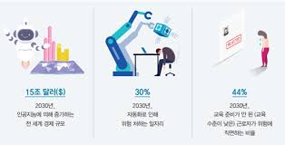

고도의 정보 산업 사회에서는 새로운 학문으로 컴퓨터공학이 근본이 되며 정보가 가장 중요한 자원이 될 것이다. 이들 정보를 수집하고 처리하는데 있어 컴퓨터공학 기술은 필수적이며 핵심적이다.
최근 수년간 마이크로프로세서의 기술과 컴퓨터 네트워크의 기술이 눈부시게 발전함에 따라 대용량의 데이터나 정보를 보다 짧은 시간 내에 수집하고 처리하며 전달할 수 있게 되었다. 이처럼 컴퓨터와 네트워크 기술 발전에 힘입어 사람들은 지역에 상관없이 자원을 공유하고, 신뢰성 있는 통신을 하며 마치 사람처럼 행동하고 사고하며 사물을 인식하고 보여줄 수 있는 멀티미디어 기술이 가능하게 되었다.
그리고 이러한 기술들을 사용하여 표현하려는 내용(콘텐츠)이 궁극적으로 21세기에서 살아갈 사람들의 삶의 수준을 향상시키고 관심의 대상이 되는 기술로 발전하게 될 것이다. 그러므로 다가올 멀티미디어 정보화시대에는 눈부시게 발전하는 컴퓨터 및 멀티미디어 정보통신기술의 패러다임을 활용하여 기존의 인간들이 이루어 놓은 문화, 문명뿐만 아니라 새로운 문화와 문명을 창조할 수 있는 새로운 형태의 기술에 대한 요구가 폭발적으로 증대될 것으로 예측되며, 이 분야의 기술을 가지거나 창조할 수 있는 인재를 요구하고 있다. 따라서 국가적, 사회적, 시대적 요구에 비추어보아 컴퓨터공학 전공에서 교육하고 다루는 기술은 산업발전의 핵심이자 주체이며, 이러한 점에서 컴퓨터공학 전공의 향후 발전전망은 매우 밝고 무한하다고 할 수 있다.